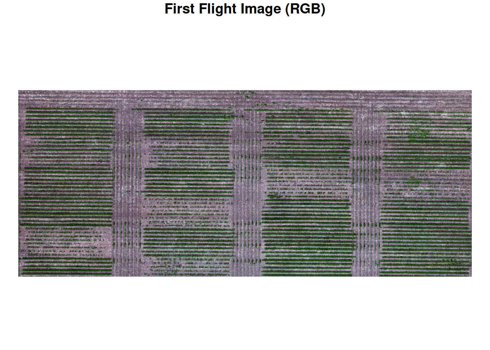
Introduction
I don’t want to try and teach you all about machine learning because it’s a field that is under rapid evolution and we have limited time. Instead, I want to show you some applications of machine learning and important considerations about machine learning models. By the end of this lecture, you should have a sense of what these models do, when they might help, and what can go wrong.
Estimating Canopy Coverage
Here is a question that comes up constantly in applied crop science:
If I fly a drone over a field early in the season, can I estimate which experimental units are developing well?
Canopy coverage is one metric. It tells you how much of the incident radiation is being intercepted by leaves. If you can estimate canopy coverage from drone images, you can rank which plots are doing well and which are lagging behind.
But there is a practical problem. A drone image is millions of pixels, and each pixel is either canopy or not canopy. To get a plot-level estimate, you need a pixel-level decision rule.
So: How do you automatically decide what is canopy and what is soil?
This is not a question about statistics or machine learning yet. This is a question about how to write a rule for a computer. Machine learning enters when you realize your hand-written rule does not work well enough.
The images used in this lecture were provided by Fernando Marcos and Natan Seraglio from the Remote Sensing and Imaging Lab at Iowa State University.
Let’s take a look at the first flight image and see what we are working with.
A Simple Rule: ExG Thresholding
Let’s think like an engineer. We need a decision rule: canopy or soil?
The insight is simple: canopy is green. Soil is not. So we can compute a greenness index from the red, green, and blue bands. If greenness is high enough, call it canopy. If not, call it soil.
This is called Excess Green (ExG), and it looks like this:
\[ \text{ExG} = 2G - R - B \]
This index emphasizes the green band relative to red and blue. If ExG is high, it is likely canopy. If ExG is low, it is likely soil.
Let’s take a look at the at the structure of the raster data and see how to apply this equation to all pixels. In the previous modules, we looked at the structure of raster data.
These images were collected with a multispectral camera, which contains red, green, and blue (RGB) bands, but also contain near infra-red (NIR) and red edge bands. Below, we use the st_dimensions function from the stars library to inspect which are the dimensions of these data.
from to offset delta refsys point
x 1 1156 5e+05 0.07999 WGS 84 / UTM zone 15N FALSE
y 1 475 4652019 -0.08 WGS 84 / UTM zone 15N FALSE
band 1 6 NA NA NA NA
values x/y
x NULL [x]
y NULL [y]
band 2023-07-06_1,...,2023-07-06_6 The data contains x and y dimensions, which correspond to longitude and latitude, respectively. Also, there is a third dimension to this data set, which correspond to the the different bands. Something else that is clear, is that the resolution of the pixels is 8 cm (indicated by the column delta). The dataset was originally at 1 cm resolution, which made the files large and computation slow. For this
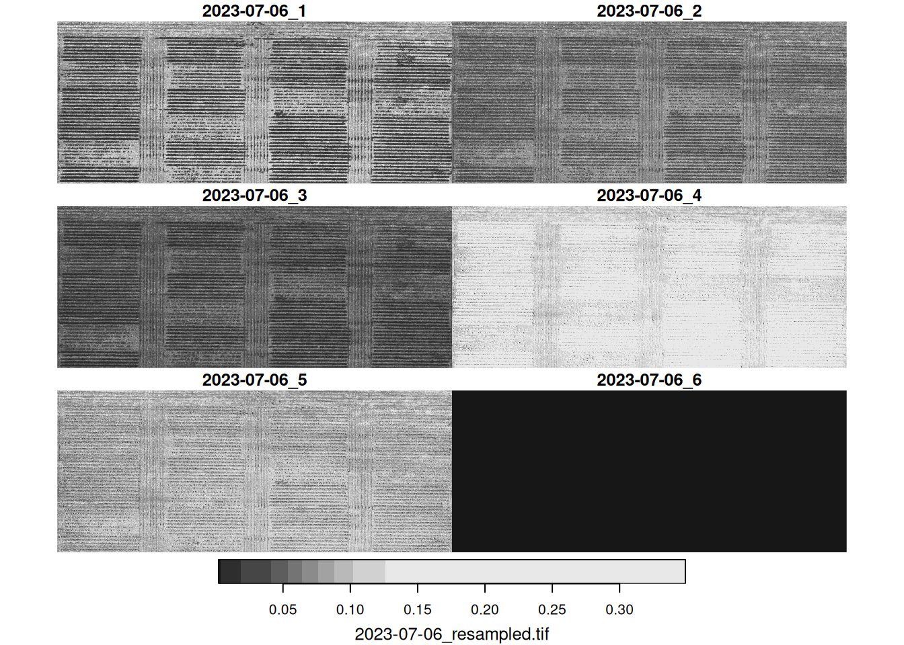
Now, let’s apply the ExG equation to every pixel. We will take advantage of some functions in the stars package. One of them is, st_apply, which applies a function at different margins of a matrix.
In our case, we want to use the different bands to compute ExG, so we will apply a function over x and y.
Here is what the ExG surface looks like across the field, and how the values are distributed:
exg <- st_apply(img_first,
MARGIN = c("x", "y"),
FUN = function(bands) {
bands[2] * 2 - bands[1] - bands[3] # excess green function
})
plot(exg,
main = "Excess Green (ExG) across the field",
col = function(n) hcl.colors(n, 'Greens', rev = TRUE))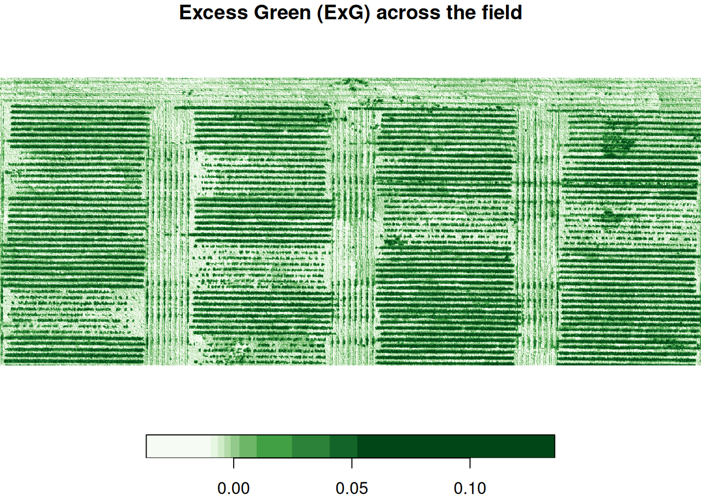
Now, we need to pick a value of ExG above which we consider a pixel to be canopy and below which we consider a pixel to be soil. This is often done by eyeballing the threshold value.
Here, we will look at a histogram of the values and try to pick a threshold that distinguishes well between the two classes. Let’s pick 0.035.
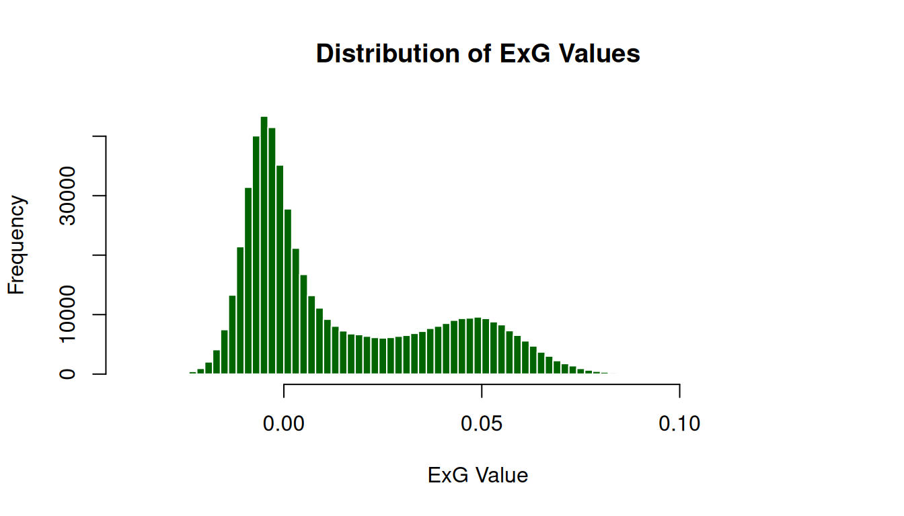
Let’s apply the threshold and check whether the pixels that were classified as soil or canopy.
binary <- st_apply(exg,
MARGIN = c('x', 'y'),
function(x){
if(x >= 0.035)
return(1)
else
return(0)
})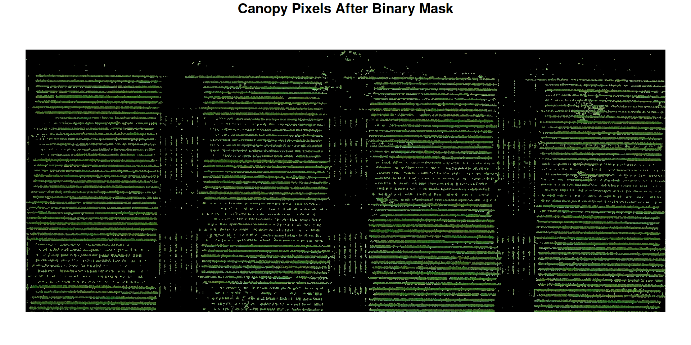
Now, let’s bring in the geometries that delimit the experimental units and extract the number of pixels that are considered green inside of each experimental unit. This will give us the fraction of green coverage inside of every experimental unit.
library(sf)
eus <- st_read("data/experimental-units.shp", quiet = TRUE)
st_crs(eus) <- st_crs(img_first)
green_coverage <- st_extract(binary,
eus,
FUN = function(x){
pixels <- as.numeric(x)
canopy_coverage = sum(pixels)/length(pixels) ## green pixels over total pixels
return(canopy_coverage)
})Below, we show the canopy coverage value for each one of the experimental units in this data set. Extracting canopy coverage in this way is really useful for phenotyping.
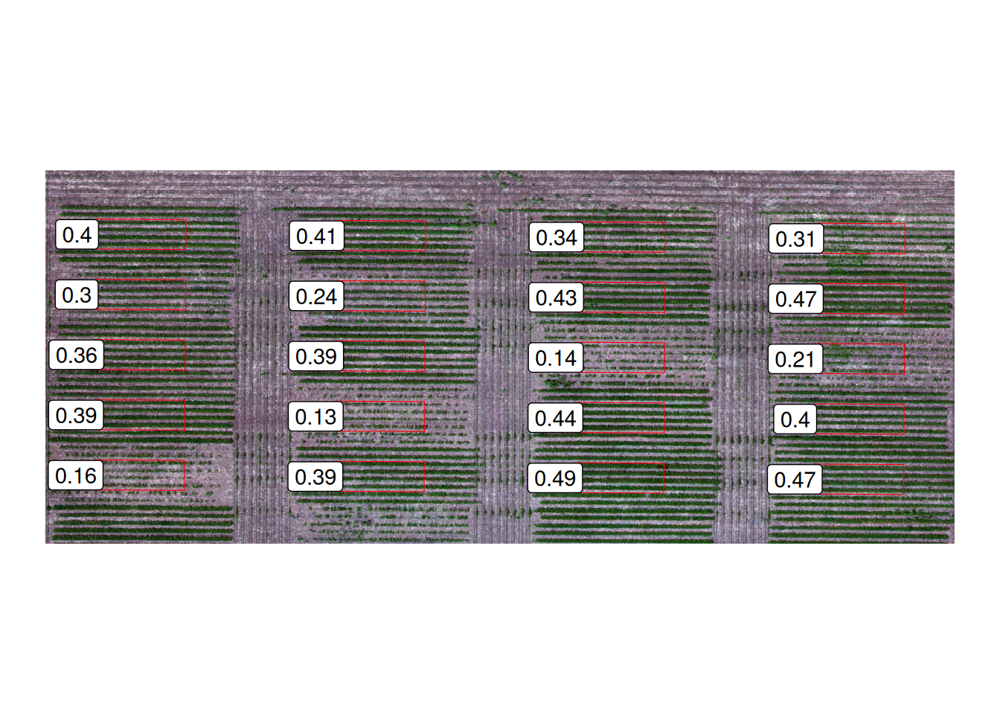
Let’s take a look at one experimental unit. It seems like this simple rule works really well for this case!
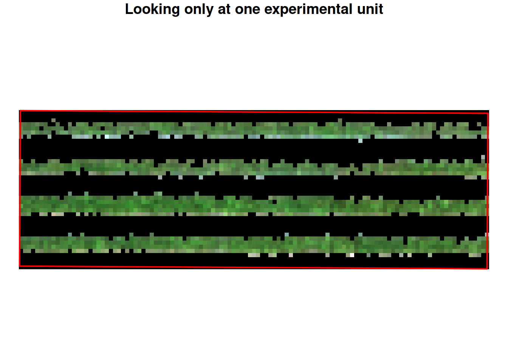
Challenges of generalizing this approach
Lighting changes across the field. Shadows darken canopy. Some soil is already dark. Early-season soybean is sparse: single pixels contain both leaves and exposed soil. The greenness value sits somewhere in between.
Moreover, soil is not uniform. Darker soils, wetter soils, sandy soils, clay soils, they all have different colors. And different growth stages within a plot can look different.
So a threshold that works in one part of the image fails in another. A threshold that works on one date fails when you use it two weeks later.
To illustrate this, let’s apply the same ExG threshold to a different date and see how it performs.
Below, is an image that was taken about 20 days later.
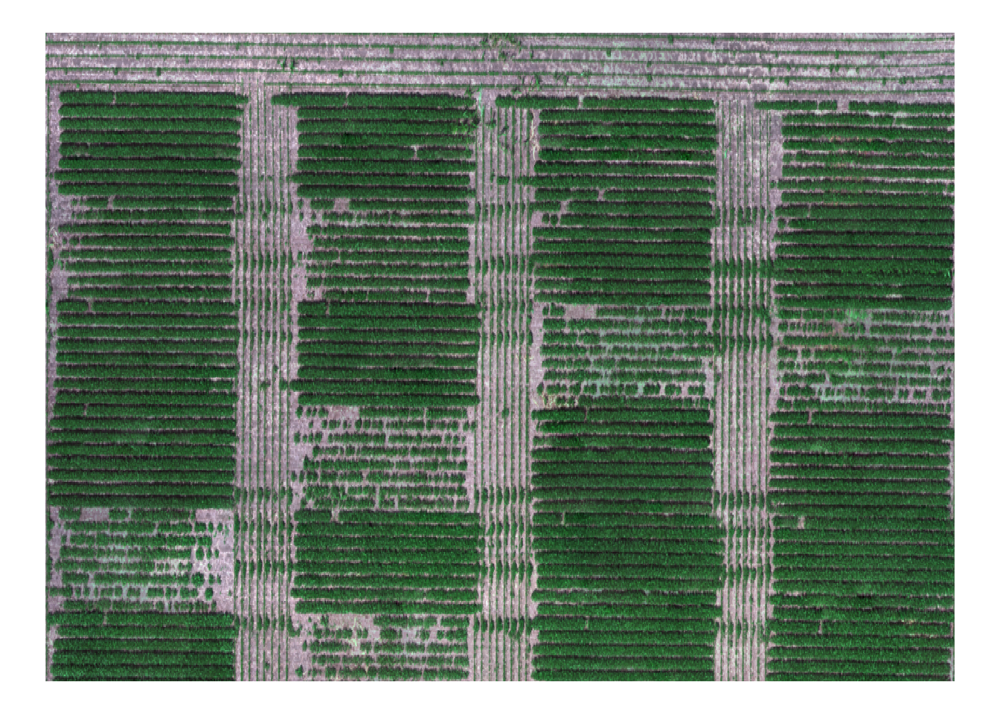
We will apply the same threshold as the previous image, and to evaluate them, we will compare the prediction to these points that I (very tediously) hand annotated. These will serve as our ground truth to which we will compare model predictions. There are 400 points of each class (soil and canopy).
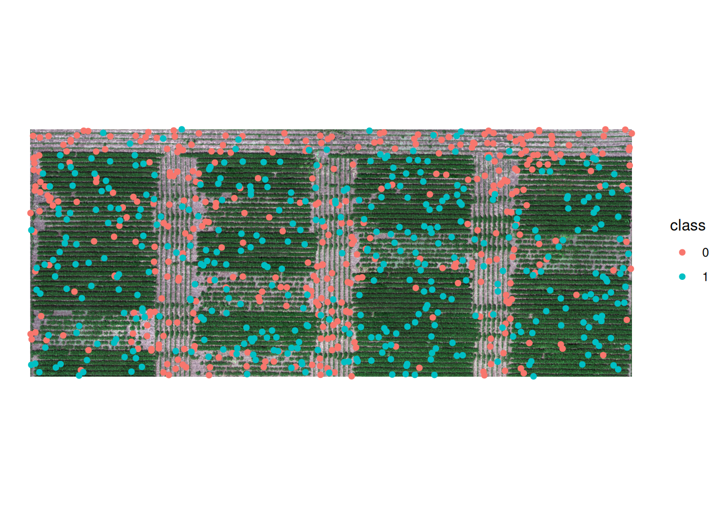
After we compute the ExG for the second image and apply the threshold, we can compare our predictions to the ground truth data.
The image below shows a comparison between the ground truth data and the predictions. The colors show whether there’s agreement betwen the predictions and the ground truth data. Points shown in orange were incorrectly labeled by our simple rule.
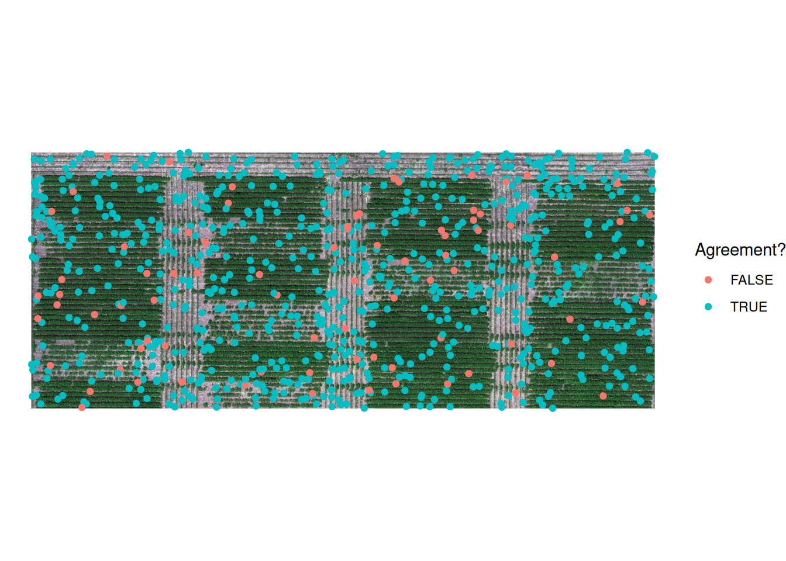
A different way of organizing this information is to show a matrix. The rows are the model’s predictions (0 = soil, 1 = canopy). The columns are the true labels. The diagonal entries are correct classifications, and the off-diagonal entries are mistakes. This is commonly called a confusion matrix.
Our confusion matrix shows that there are 80 pixels that should have been classified as canopy and were classified as soil using the ExG threshold. This indicates that the threshold value we chose for the first flight might not work too well for this flight.
ExG Threshold — Confusion Matrix (Second Flight): Observed
Predicted 0 1
0 400 80
1 0 320How can we solve this?
Do we hand-tune the threshold? Try one value, look at the map, adjust, try again? But then which value do you use for the next date? And the next field?
Or do you search for more indices? Maybe combine ExG with other indices? Add more hand-crafted rules? “If ExG is high, predict canopy. If ExG is low and NDVI is high, predict canopy anyway. If…”
You can keep building rules, but at some point you stop calling this a rule and start calling it a model. And once you are fitting a model to data, you might as well let the model learn what matters instead of guessing.
Classification Trees: Learning the Rule
Instead of hand-tuning a threshold, what if you gave the algorithm labeled examples and let it build the rule?
Give it pixels where you know the ground truth (surveyed by hand). Show it pixels that are canopy and pixels that are soil. Let it find which combinations of band values reliably separate them.
A classification tree is one way to do this. A tree learns a sequence of binary questions:
- Is Band 3 above 0.4?
- If no, is Band 2 above 0.3?
- If yes, is Band 1 below 0.2?
Each question is just a threshold, but the tree asks different questions in different parts of the data. It adapts.
Why Trees Are Interpretable
A tree has one big advantage: you can follow the logic. If the model predicts canopy, you can trace back through the tree and see which band values triggered that decision. That interpretability is valuable. It lets you check if the logic makes sense.
But a tree has one big disadvantage: it is unstable. Train a tree on one set of labeled pixels, get one set of splits. Train it on a slightly different set of labeled pixels, get different splits. Small changes in the training data can lead to big changes in the learned rule.
This is called overfitting to the training data. The tree is fitting noise, not learning a principle.
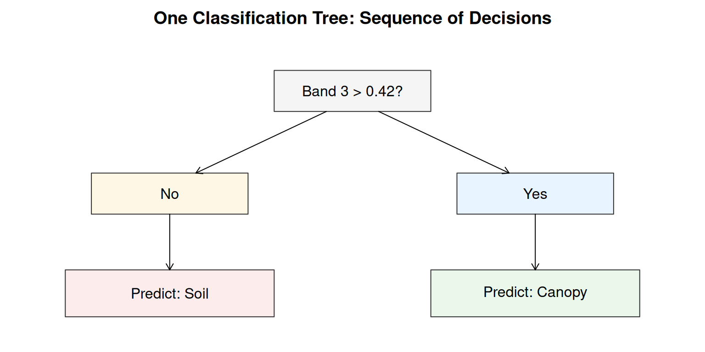
Random Forest: Averaging Out Instability
Here is a practical solution: instead of building one tree, build many trees. Train each tree on a slightly different subset of the labeled pixels. Each tree will learn somewhat different splits, but they will all point in roughly the same direction.
Then, for each pixel, ask all the trees to vote. If 250 out of 300 trees say canopy, predict canopy. If 150 out of 300 say canopy, it is close and the pixel is probably a boundary.
This is random forest. The forest averages out the instability of any single tree. Because many unstable estimates, when averaged, become stable.
Why 300 trees? Think back to sampling: a single sample gives you one estimate, but that estimate has variance. Take many samples and average them, and the variance shrinks. The same logic applies here. Each tree is trained on a different random subset of resampled data, so each tree is like one sample from the data. One tree gives an unstable estimate; 300 trees averaged together give a much more stable one. Often, at 300 trees, adding more stops helping much, enough to get stability, not so many that you are wasting computation. But this is not a universal rule. It should be evaluated with your data set.
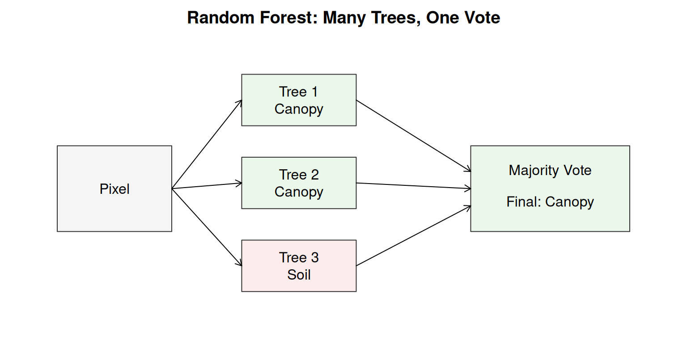
RGB-Only Random Forest: First Attempt
Now, let’s train a random forest model on our labeled data. We will use hand-labeled pixels from the first flight that tell us which pixels are canopy and which are soil. Let’s take a look at these points.
Like before, a value of 0 represents soil and a value of 1 represents canopy.
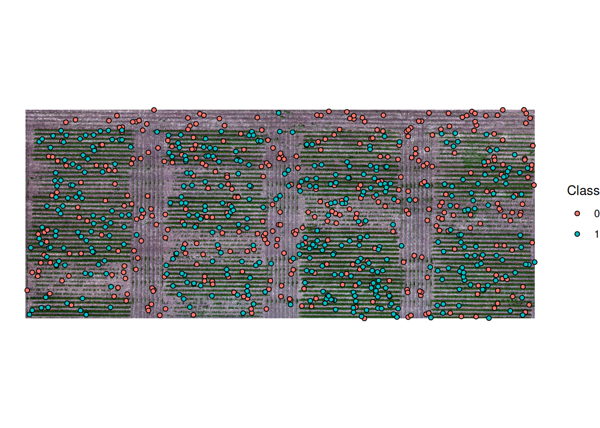
We will fit a random forest model using the randomForest library. We will start with only the three visible bands: red, green, and blue.
The code to fit a random forest model in R looks like this:
rf_fit_rgb <- randomForest(
x = PREDICTORS #RGB Bands in this case,
y = DEPENDENT VARIABLE #Canopy/Soil in this case,
ntree = 300
)
rf_fit_rgbThis is the output of the model:
Call:
randomForest(x = train_df[, x_cols_rgb], y = train_df$class, ntree = 300)
Type of random forest: classification
Number of trees: 300
No. of variables tried at each split: 1
OOB estimate of error rate: 1.88%
Confusion matrix:
0 1 class.error
0 392 8 0.0200
1 7 393 0.0175We can apply the trained model to the rest of the pixels in the image. This generate a new raster in which every pixel takes the value of either soil or canopy.
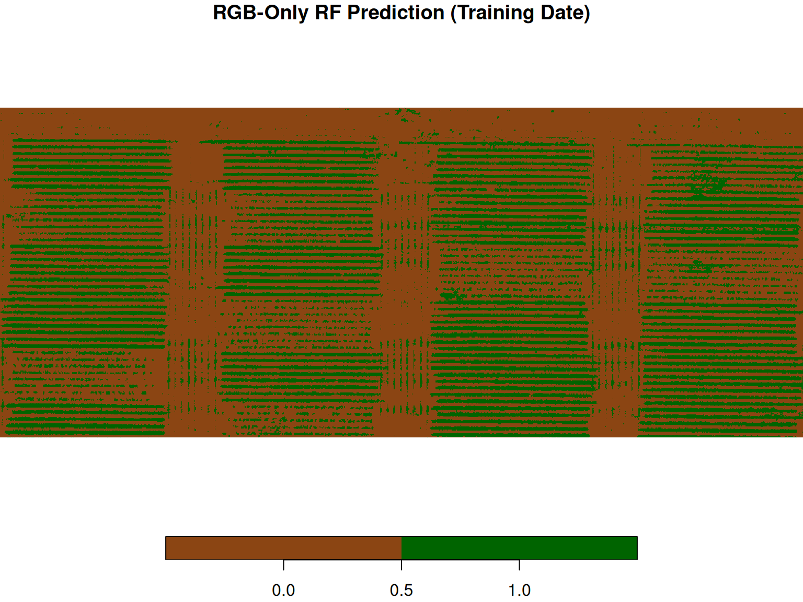
It looks like it is doing a good job on the training data! But a prediction map on the training date only tells us that the model memorized the labeled pixels, it doesn’t tell us how well it generalizes.
Let’s use a a separate test set from the same flight: labeled pixels that the model never saw during training. Let’s evaluate on those.
Here’s the training set:
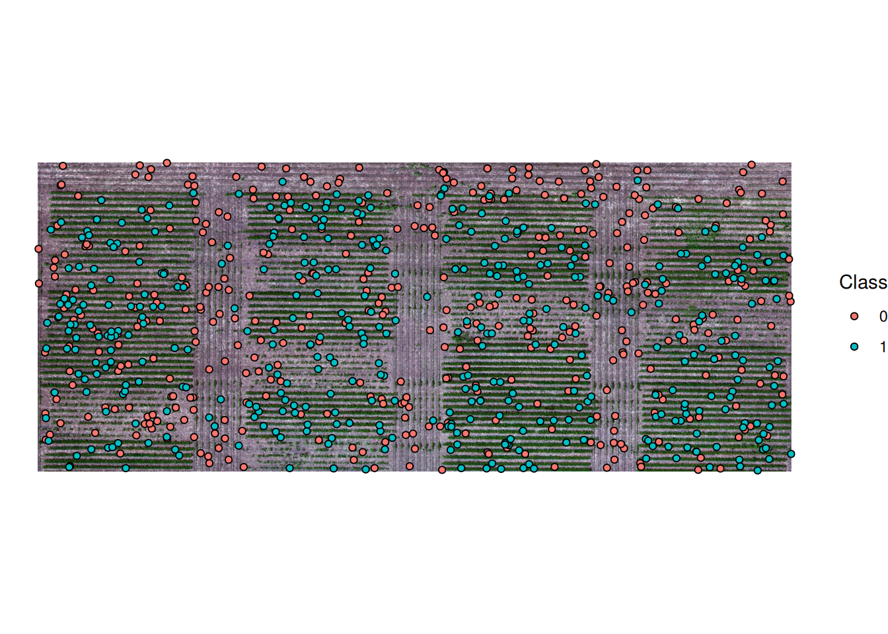
RGB-Only Model — Confusion Matrix (First Flight Test Set): Observed
Predicted 0 1
0 386 5
1 14 395The rows are the model’s predictions (0 = soil, 1 = canopy). The columns are the true labels. The diagonal entries are correct classifications; the off-diagonal entries are mistakes. This gives us a baseline: how well does the model do on held-out pixels from the same date it was trained on?
Now, let’s ask a harder question: does it still work on a different date, on a completely different flight? We trained it on the July 6th image. Now we will apply it to the July 24th image.
Testing on the Second Flight
Before applying the model, let’s look at the second flight image itself.
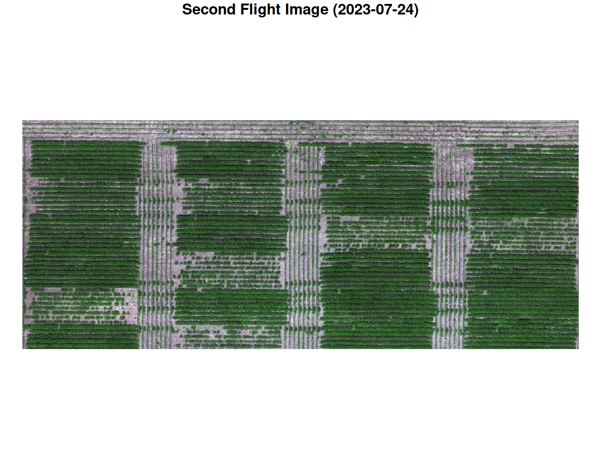
Here’s the model prediction for second flight:
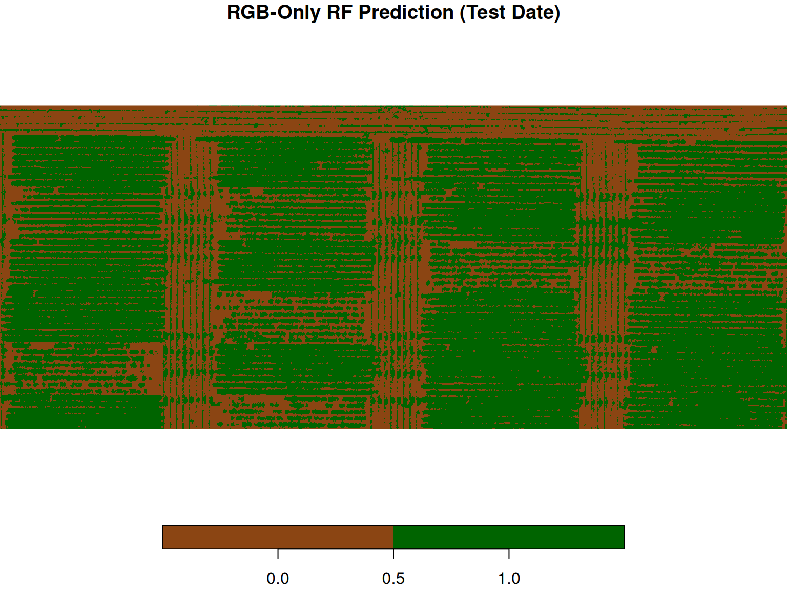
Let’s look at the confusion matrix to see how well the model performed.
RGB-Only Model — Confusion Matrix (Test Date): Observed
Predicted 0 1
0 383 62
1 17 338The rows are what the model predicted (0 = soil, 1 = canopy). The columns are the true labels. The diagonal entries are correct predictions. The off-diagonal entries are mistakes: pixels the model called canopy that were actually soil, and pixels it called soil that were actually canopy.
This model did well but it did not do much better than the simple thresholding rules we were using before. Let’s see if we can improve the model.
What Other Information Can We Use?
The RGB model works reasonably well. But the drone image contains more information than just the three visible bands:
- Blue (Band 1), Green (Band 2), Red (Band 3): Visible light.
- Red Edge (Band 4): Between red and near-infrared. Vegetation has a sharp reflectance change here.
- Near-Infrared (Band 5): Beyond visible light. From plant physiology, we know that healthy vegetation reflects strongly in NIR. Plants absorb visible light for photosynthesis but reflect infrared to avoid overheating.
So in principle, adding these bands should help. But before we assume that, let’s check whether the expected pattern actually shows up in our data. Below, we compute the mean band values for soil (class 0) and canopy (class 1) pixels in the training set.
class Blue Green Red RedEdge NIR
1 0 0.0821 0.0654 0.0499 0.1238 0.0916
2 1 0.0277 0.0482 0.0214 0.1945 0.0815Is canopy actually brighter in NIR than soil here? Let’s train a model with all five bands and see whether it changes anything.
Multiband Random Forest
Now we train on all bands: visible light (R, G, B), red edge, and near-infrared.
The code to fit the model now looks very similar to the model we fit before, except that now we are including the NIR and Red Edge bands as well.
rf_fit_multi <- randomForest(
x = PREDICTORS #RGB Bands + NIR + Red Edge,
y = DEPENDENT VARIABLE #Canopy/Soil in this case,
ntree = 300
)
rf_fit_multiThis is what we see when we print the model:
Call:
randomForest(x = train_df_multi[, x_cols_multi], y = train_df_multi$class, ntree = 300, importance = TRUE)
Type of random forest: classification
Number of trees: 300
No. of variables tried at each split: 2
OOB estimate of error rate: 2.12%
Confusion matrix:
0 1 class.error
0 393 7 0.0175
1 10 390 0.0250Just like with the RGB model, let’s first evaluate the multiband model on the first flight test set before applying it to the second flight.
Multiband Model — Confusion Matrix (First Flight Test Set): Observed
Predicted 0 1
0 389 12
1 11 388Testing on the Second Flight (Multiband)
Now, let’s see how the model does on the second flight.
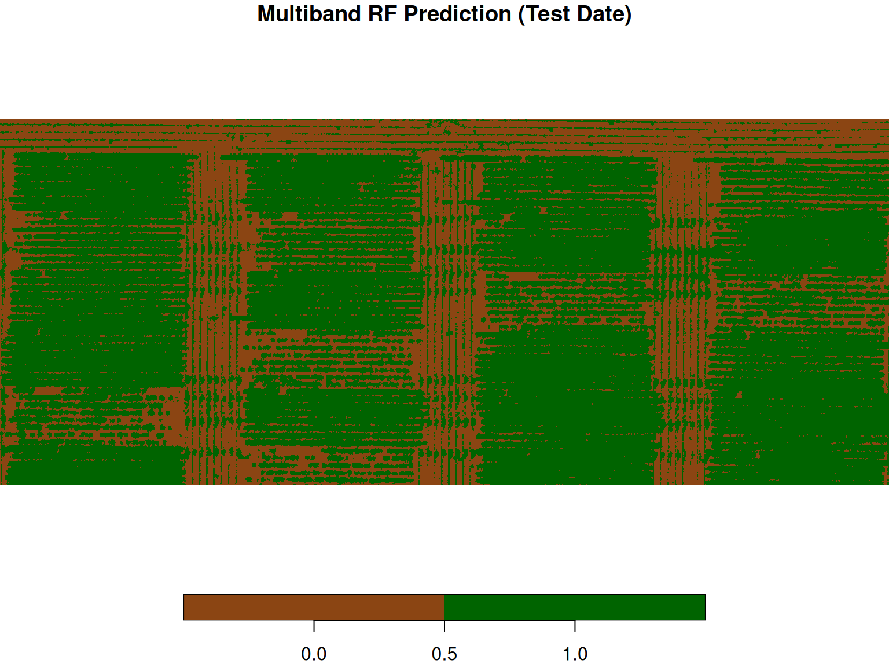
Multiband Model — Confusion Matrix (Test Date): Observed
Predicted 0 1
0 362 54
1 38 346We can see that simply adding more bands to the model did not improve the accuracy and precision of the pixel classification. If we compare the three confusion matrices of the second flight, we can notice that we got almost the same number of misclassified pixels. One big difference was that the ExG rule-based approach made the same mistake in all of them, while the random forest model presented misclassifications on both sides.
Comparing the three approaches
Let’s compare the three approaches
ExG Threshold: Observed
Predicted 0 1
0 400 80
1 0 320
RGB-Only Model: Observed
Predicted 0 1
0 383 62
1 17 338
Multiband Model: Observed
Predicted 0 1
0 362 54
1 38 346What Happened?
Use the confusion matrices to decide whether the multiband model improved over RGB-only on this later flight date.
Go back to the band means table. NIR (band 5) shows canopy values lower than soil — the opposite of what plant physiology predicts. Variable importance confirms this: NIR contributes almost nothing. Red and Blue do most of the work.
There are a few possible explanations:
- The canopy is sparse early in the season. Many pixels are mixed — part leaf, part soil — so the NIR signal gets diluted.
- We don’t know the details of the image processing pipeline. Reflectance calibration and atmospheric correction could affect the values in ways we cannot verify without metadata.
- This sensor’s NIR band may not cover the reflectance peak around 800 nm that NDVI-based reasoning relies on.
This is an important reminder: domain knowledge is a starting point, not a guarantee. Always check your assumptions against the data. Variable importance is a useful tool for this — if a band you expected to matter contributes almost nothing, that is worth investigating.
Practical Limits of This Approach
Before wrapping up, it is worth thinking about the limitations of this workflow.
How much labeled data did we use?
We trained on hand-labeled pixels from one experimental unit at one date. That is a small sample. If your field or your crops look different, the model may not transfer well.
What about boundary pixels?
Most classification errors happen at boundaries between canopy and soil. These mixed pixels are inherently ambiguous. A high-confidence map can hide the fact that accuracy at the edges is actually low.
Does accuracy matter equally everywhere?
If you care about plot-level canopy coverage, a few misclassified boundary pixels may not change your estimate much. But if you care about individual pixel accuracy — for example, for prescriptive mapping — those errors matter more.
Are errors spatially clustered?
Look at your error map. Do errors occur randomly, or are they clustered in certain parts of the field? Clustered errors suggest the model has missed something systematic about that area — shade, soil type, crop stress. That is worth investigating.
Conclusion
We started with a simple engineering question: how do we turn pixels into decisions?
A hand-crafted rule like ExG gives you a clear, intuitive starting point. It forces you to think about what distinguishes canopy from soil and how that translates into a computable rule. But it also exposes the limits of fixed thresholds. The moment conditions change, whether due to lighting, soil background, or growth stage, the rule begins to break.
Machine learning does not solve a different problem. It solves the same problem of writing a decision rule, but in a different way. Instead of specifying the rule yourself, you provide examples and let the model learn which patterns are useful.
That flexibility is powerful, but it comes with trade-offs. A model that fits your training data well may not generalize. Adding more variables does not guarantee improvement. Even domain knowledge, such as expecting NIR to separate vegetation, can fail when the data do not behave as expected.
So the goal is not to replace simple rules with complex models. The goal is to understand when each approach is appropriate and to evaluate them critically.
As you move forward, keep a few guiding questions in mind:
- What exactly is the decision rule being applied?
- What assumptions does this rule rely on?
- Where is the model likely to fail?
- Does performance hold when conditions change?
If you can answer these questions, you are not just applying machine learning. You are reasoning about it.